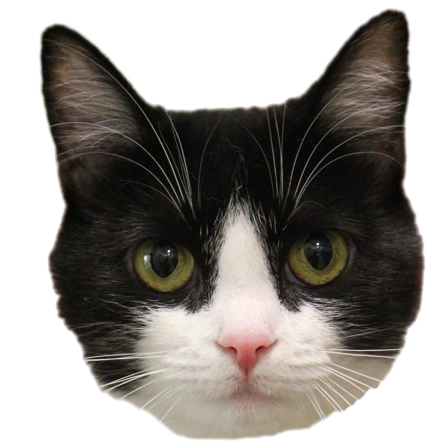
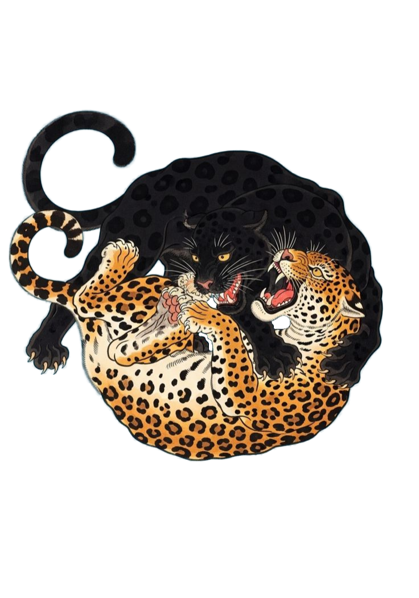
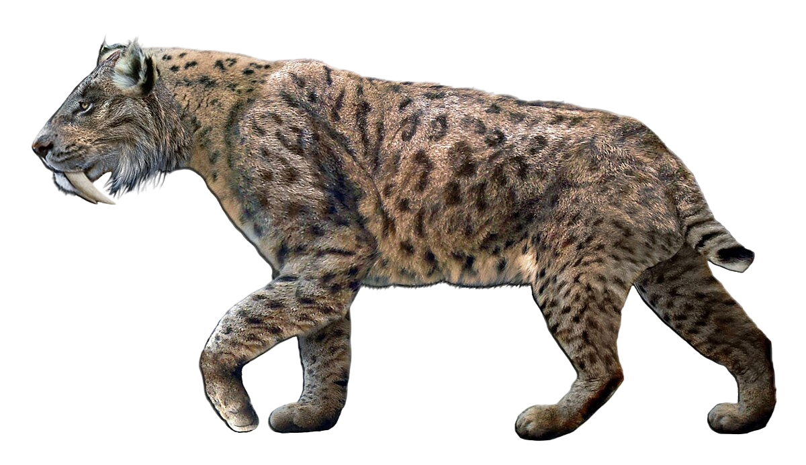
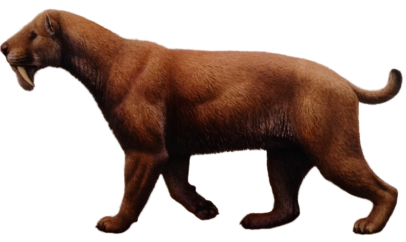
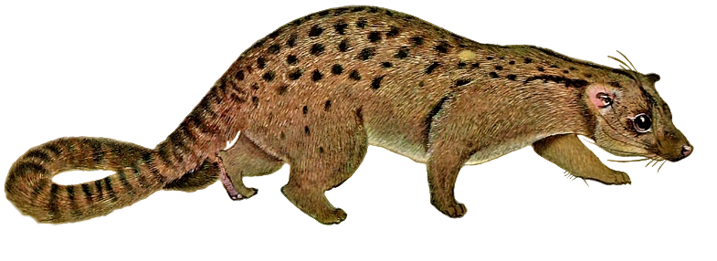

Pardofelis marmorata
я мраморная кошка мур мур



я мраморная кошка мур мур

я не котопума бугага
я не котопума бугага
я котопума бугага

Леопард — изящная и мощная большая кошка, выделяющаяся среди сородичей пятнистым окрасом в виде характерных «розеток». Это один из самых пластичных хищников, обитающий в самых разных условиях: от африканских саванн и пустынь до заснеженных лесов Дальнего Востока. Леопарды ведут одиночный образ жизни и известны своей способностью мастерски лазать по деревьям, где они часто отдыхают и прячут добычу от других хищников. Будучи ночными охотниками, они питаются в основном копытными, проявляя невероятную силу и скрытность. Несмотря на широкое распространение, многие подвиды леопарда находятся под угрозой исчезновения и охраняются международным правом.

Лев — величественный хищник, единственный среди кошачьих, живущий большими семейными группами, называемыми прайдами. Самцы легко узнаваемы по густой гриве, которая защищает их в схватках и служит признаком силы, в то время как более легкие и быстрые самки являются основными охотниками группы. Львы обитают в саваннах и редколесьях Африки (и в небольшом количестве в Индии), предпочитая открытые пространства для коллективной охоты на крупных копытных. Большую часть дня эти кошки проводят в отдыхе, сохраняя энергию для ночных и сумеречных рейдов. Сегодня популяция львов сокращается из-за потери среды обитания и конфликтов с человеком, что придает виду статус уязвимого.

я пещерный лев арррр

я американский лев арррр

Ягуар — самая крупная кошка Нового Света и единственный представитель рода пантер на территории Северной и Южной Америки. Внешне он похож на леопарда, но отличается более массивным телосложением и особым узором: внутри его пятен-розеток обычно находятся небольшие черные точки. Ягуары — превосходные пловцы, которые часто селятся у воды и охотятся не только на копытных, но и на кайманов, черепах и рыбу. Благодаря невероятно мощным челюстям этот хищник способен прокусывать даже крепкие панцири и черепа добычи. Несмотря на то что ягуар является вершиной пищевой цепи в тропических лесах, его популяция сокращается из-за вырубки амазонских джунглей и преследований со стороны фермеров.

Тигр — крупнейший представитель семейства кошачьих, обладающий мощным телом и уникальным узором из черных полос на рыжей шкуре. Этот одиночный хищник обитает преимущественно в лесах Азии, от тайги Дальнего Востока до тропических джунглей Индии. В отличие от большинства кошек, тигры отлично плавают и часто охотятся вблизи водоемов, выбирая в качестве добычи крупных копытных. Из-за браконьерства и потери среды обитания вид признан вымирающим и занесен в Международную Красную книгу. На сегодняшний день охота на этих величественных животных запрещена во всем мире.
Ирбис, или снежный барс, — уникальная высокогорная кошка, приспособленная к жизни в суровых условиях Центральной Азии. От других крупных кошачьих он отличается длинным, необычайно густым мехом дымчато-серого окраса с темными пятнами и массивным хвостом, который служит балансиром при прыжках по скалам. Ирбисы ведут скрытный одиночный образ жизни, встречаясь на высоте до 6000 метров над уровнем моря, где охотятся на горных козлов и баранов. Благодаря особенностям строения гортани эти животные не умеют рычать, зато издают негромкое мурлыканье. Из-за труднодоступности мест обитания и низкой численности вид остается одним из самых малоизученных и имеет статус редкого во всем мире.

Дымчатый леопард — уникальная кошка из Юго-Восточной Азии, которая генетически занимает промежуточное положение между малым и большими кошками. Его шкура украшена крупными темными пятнами неправильной формы, напоминающими облака, что и дало виду название. Это один из самых приспособленных к древесному образу жизни хищников: гибкие суставы лап позволяют ему спускаться по стволам вниз головой. Еще одной поразительной особенностью являются его клыки, которые по отношению к размеру тела являются самыми длинными среди всех кошачьих. Из-за скрытного образа жизни в густых тропических лесах и сокращения мест обитания вид остается малоизученным и находится под охраной как уязвимый.

Саблезубые кошки — это вымершая ветвь семейства кошачьих, прославившаяся своими огромными клыками, которые могли достигать 20 см в длину. Чтобы использовать такое оружие, эти хищники научились раскрывать пасть почти под прямым углом — до 95 градусов. Вопреки легендам, не все они были гигантами: многие виды уступали в размерах даже современному леопарду. По телосложению они были мощнее и коренастее нынешних кошек, а их короткие хвосты делали их внешне похожими на очень сильных и опасных рысей.

Барбурофелиды — это вымершее семейство древних хищников, которые внешне поразительно напоминали саблезубых кошек. Они появились в Африке миллионы лет назад и постепенно расселились по другим континентам. Хотя ученые долгое время считали их близкими родственниками нимравид, сегодня их выделяют в отдельную группу. Самой яркой чертой этих зверей были невероятно длинные клыки, которые делали их одними из самых опасных охотников своего времени, несмотря на лишь отдаленное родство с настоящими кошачьими.


Азиатские линзанги — удивительно стройные и грациозные хищники, чья бархатистая шерсть напоминает на ощупь дорогой густой мех. Эти животные весят меньше килограмма и обладают гибким телом с очень длинным полосатым хвостом. В зависимости от вида, их спины украшают либо широкие темные полосы, либо аккуратные ряды пятен на золотистом фоне. Линзанги отличаются узкой удлиненной мордочкой и острыми втяжными когтями, а их главной особенностью является отсутствие резкого запаха, характерного для большинства их сородичей.

Пальмовая цивета — уникальный хищник, который внешне напоминает небольшую приземистую кошку. При длине тела около полуметра она обладает удивительно длинным и пушистым хвостом. Ее короткая серовато-бурая шерсть украшена мягким рисунком из темных пятнышек и светлых меток на спине. Завершают образ округлые ушки и короткие лапки с цепкими изогнутыми когтями. Одной из главных особенностей этого зверька являются пахучие железы, с помощью которых цивета оставляет свои «визитные карточки» в природе.

Нимравиды — это вымершие хищники, которые внешне очень напоминали кошек. У них было мускулистое тело, короткие лапы и хвост — совсем как у современных представителей кошачьих.
/Род Диниктис (Dinictis)/Dinictis - ужасная куница.png)
Род Диниктис относится к семейству нимравид — древних хищников, внешне напоминавших кошек. Около 20–30 миллионов лет назад они охотились на землях современной Америки. Это были мускулистые звери метровой длины с мощными челюстями и пятипалыми когтистыми лапами. От других саблезубых кошек диниктис отличался наличием длинного хвоста и, вероятно, очень чувствительными длинными усами.
/Род Динайлур (Dinaelurus)/Динайлур.png)
Динайлур — вымерший кошкоподобный хищник, обитавший на планете в период с 30 по 20 миллионов лет назад. Несмотря на принадлежность к «ложным саблезубым тиграм», он заметно выделялся на их фоне. У динайлура не было огромных клыков, характерных для его семейства: строением пасти он был гораздо ближе к современным пантерам, что делает его единственным и неповторимым представителем своего рода.
/Род Nimravus/Nimravus.png)
Нимравус — это древний хищник из семейства «ложных саблезубых тигров», обитавший в Северной Америке около 30 миллионов лет назад. При длине тела чуть более метра он внешне напоминал современного каракала. Однако были и отличия: его задние лапы были длиннее, а когти втягивались лишь частично, как у собак. Этот ловкий зверь предпочитал охотиться из засады на птиц и мелких животных, придерживаясь тактики современных кошек.
/Род Eusmilus/Eusmilus.png)
Эвсмил — один из самых впечатляющих представителей «ложных саблезубых тигров», обитавший в Северной Америке и Евразии миллионы лет назад. Своими размерами он напоминал леопарда, но достигал внушительных 2,5 метров в длину. Главным оружием хищника были огромные сабельные клыки. Чтобы эффективно их использовать, эвсмил мог раскрывать пасть на невероятные 90 градусов, а для защиты зубов на его нижней челюсти имелись специальные костные «ножны».
/Род Гоплофонеус (Hoplophoneus)/Гоплофонеус.png)
Гоплофонеус — древний хищник из семейства «ложных саблезубых кошек». Хотя он не был прямым предком современных кошачьих, внешне он очень на них походил: массивное мускулистое тело делало его таким же опасным, как и знаменитых саблезубых тигров. Уникальной чертой гоплофонеуса были два костяных выступа на нижней челюсти — особые «ножны», которые защищали его длинные и невероятно острые клыки.